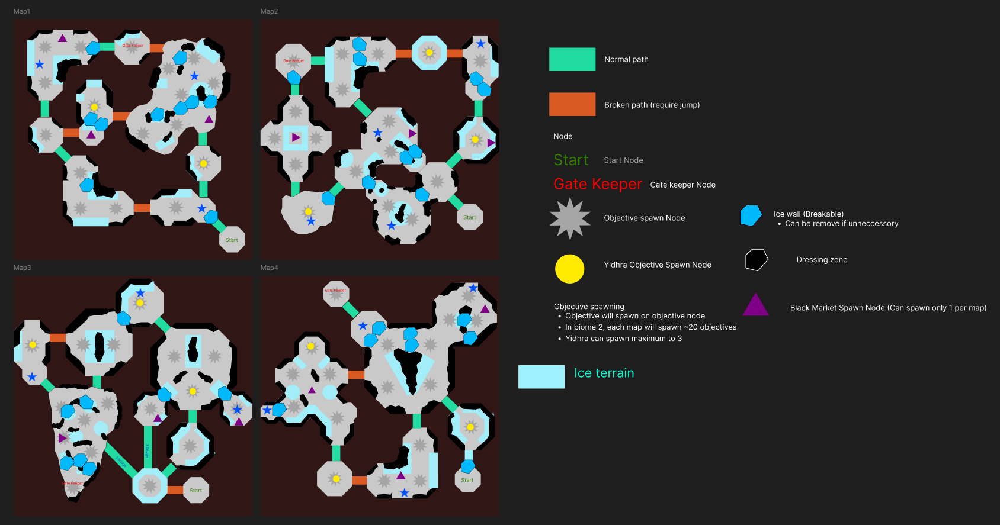
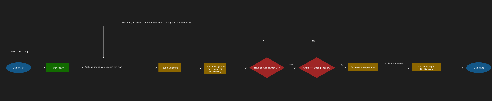
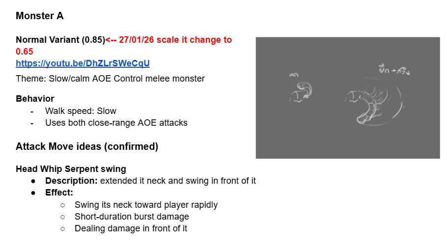
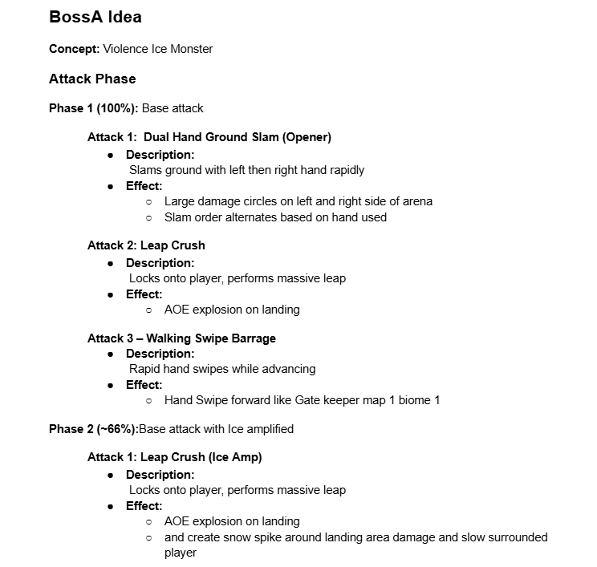
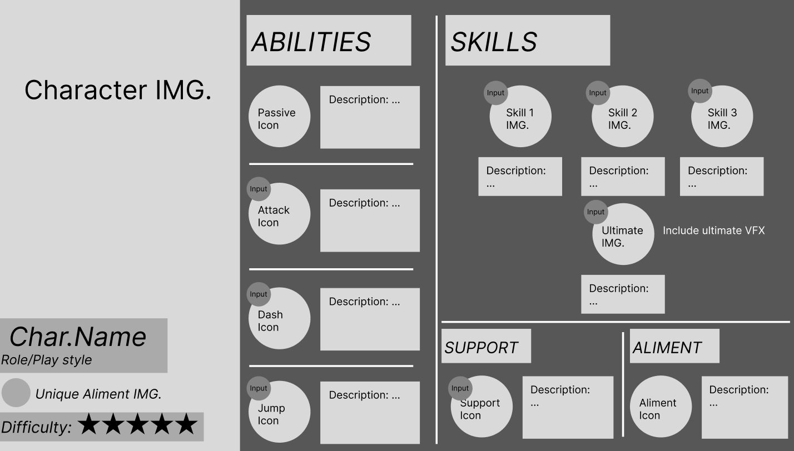

Father, Son & Holy Gun

Father, Son and Holy Guns is a fast-paced roguelite multiplayer game set in a bizarre world where faith fuels firepower and every run tests your sanity!
When our gods hear no prayer, only bullets are the answer. Join the crusade against aliens as one of the Gunsaders of the Church. Team up with friends online and embark on holy missions to fend off the frantic hordes of cosmic horror, inspired by Lovecraft mythos. Burn the sinners. Extract the human-oil. And prove your faith to the Church Of Humanity.
Jumbo Jumps Co., Ltd. is a Thai indie game studio based in Bangkok. During my internship I was involved across multiple areas of game design, from designing and balancing game systems to creating new content, level design, and UX mockups.
- Game Reference Analysis Gained an understanding of how to search for and analyze references from a wide variety of games, then apply those insights to design game mechanics that fit the project's systems. This allowed me to adapt concepts from different genres into the design appropriately.
- Quest Design Structure Developed an understanding of the project's quest structure and design formula, including quest unlock conditions, objective formats, and mission flow sequence.
- Data-Driven Design Through working with NPC dialog data and adjusting various in-game values, I gained an understanding of data-driven design, how to manage game data systematically and make it easier to tweak and iterate on values without reworking the underlying logic.
- Level Design Analysis By participating in level analysis and design, such as defining map patterns, placing objectives, and composing map layouts, I developed an appreciation for player flow and how environmental arrangement supports the player's overall experience.
- Enemy and Combat Design Designing monsters, elites, and gatekeepers gave me a deeper understanding of enemy behavior design, how to give each enemy type a distinct identity, and how to shape attack patterns and difficulty to suit the game's combat system.
- Gameplay Balancing Learned how to balance enemy encounters by tuning monster counts, enemy types, and wave spawn patterns to create appropriate difficulty and a satisfying challenge for players.
- Game Development Workflow Working alongside the development team on a real project gave me insight into the game dev pipeline, including writing design documents, using a ticket system to track tasks, and how communication flows within a team.
Assigned to design levels for the game, as well as playtest and provide feedback on existing maps. This included a key structural analysis that led to shifting the entire map architecture from an Open Area layout to a Modular Island system, a change agreed upon by the full team, as Open Area maps were difficult to control in terms of player navigation and monster placement. Modular Islands proved to be the better long-term solution.
What I worked on
- Modular Map System: Analyzed and proposed the shift from Open Area to Modular Islands, improving asset reuse efficiency and enabling more precise control over player flow.
- Biome Construction (Biome 2): Designed the layout for a Snow/Ice Biome, including Points of Interest (POI), enemy spawn points, and objective placement.
- Navigation Design: Defined bridge crossing behavior and jump point placement to align with the game's camera angle and movement feel.
Process
Referenced other Rogue-like games such as Hades 1 & 2, Ravenswatch, Dead Cells, and Metroidvania titles to inform pacing decisions. Coordinated closely with the development team on mechanics throughout the process.
- Modular Map System: Prepared a report document presented to the Lead Designer and developers, outlining the advantages of switching to Modular Islands: better asset reuse (one island built, reused across maps) and clearly defined combat zones.
- Biome Construction (Biome 2): Designed the layout by referencing the updated Biome 1 Modular Island structure, then identifying what gameplay styles were still missing. For example, adding a semi-open island that delivers a similar experience to the original design but is easier to manage.
- Navigation Design: Defined walking routes and established Main Paths and Sub Paths to determine where bridges should be placed and what type each should be.
Level Layout

Player Flow Chart

Assigned to design new content to increase gameplay variety and keep the experience engaging, by both improving existing mechanics and identifying opportunities to bring new systems into the game.
What I worked on
- Character Abilities: Designed ultimate abilities for the main playable characters, focusing on giving each a distinct playstyle such as combo-focused, zone control, and burst damage.
- Objective Variety: Designed secondary in-level objectives including base defense, resource collection, and elite enemy elimination to add variety to each run.
Process
Studied the existing GDD to analyze what gameplay styles could still be added to make the game more fun without making it feel unfocused or overcrowded with systems.
- Character Abilities: Identified each character's strengths and weaknesses, then decided whether to amplify their strengths or compensate for their weaknesses when designing the ability.
- Objective Variety: Referenced objectives and missions from other games, then proposed to the team how the mechanics could be adapted to fit our game's existing systems.
Assigned to design game systems that required mathematical formulas to make them repeatable and adjustable, including systems designed to integrate with the Steam platform.
What I worked on
- Progression and Quest System: Designed the structure of a repeatable quest system, including dynamic difficulty formulas and unlock conditions tied to player progression.
- Steam Achievement Integration: Planned and defined unlock conditions for Steam Achievements to align with Steam's technical requirements.
- Dialog Data Setup — Prepared NPC dialog data from the narrative team and integrated it into the game, including setting up data structure for localization support.
Process
Studied Steam's platform requirements and proposed the necessary systems and variables to the development team so the game could properly communicate with the platform. Also researched calculation principles that allow a single formula to be reused while adjusting values based on randomized parameters within the design constraints.
- Progression and Quest System: Researched and tested a dynamic difficulty formula (Quest Formula) to improve replayability, and designed questline unlock conditions based on player progress milestones.
- Steam Achievement Integration: Researched Steam Achievement requirements and defined the variable types that affect unlock conditions across different formats. Assigned API names to each achievement for platform communication.
- Dialog Data Setup: Designed the data structure for the development team, then integrated dialog entries into the Dialog Manager system, organizing conversations into sequences for proper playback order.
Quest formula

Supported the balancing side of the game with a focus on enemy encounter tuning and preparing the game for a public demo.
What I worked on
- Defined monster wave composition for each objective, including the number of enemies, number of waves, and enemy types, as well as designating elite objective encounters.
- Worked on game balancing that was used in the Thailand Game Show 2025 demo.
Designed enemy movesets and AI behaviors for monsters in the game, focusing on giving each enemy type a distinct identity that fits the combat system.
What I worked on
- Enemy Behavior Design: Designed attack movesets and AI behavior patterns for monsters, covering a range of archetypes such as slow heavy hitters, fast aggressors, and support types.
Process
Started by defining what kind of attack patterns were needed, then researched enemies from other games that matched those goals. After establishing each monster's behavior profile, the reference material was presented to the team to guide the technical implementation and animation direction.
MonsterA Design

BossA Design

Created UI design mockups for the UX/UI team to work from, focusing on defining what information and elements each screen needed to present to the player.
What I worked on
- Result Screen Mockup: Designed the flow of the result screen layout covering different end-of-run scenarios.
- Skill Overview Mockup: Designed a skill overview screen to clearly communicate each character's abilities to the player.
Process
Referenced UI from various games and selected elements worth adapting into the design, then presented the mockups to the UX/UI team as a handoff for further development.
- Result Screen Mockup: Studied similar genre games and summarized what information should be shown, such as upgrades and builds from that run, play time, and other player profile data.
- Skill Overview Mockup: Referenced hero shooter games such as Overwatch and Marvel Rivals, as they share a similar structure where players select a character and all characters share the same basic input layout, making them a strong reference for how to present skill information clearly.
Skill Overview Design

Result Screen Flow